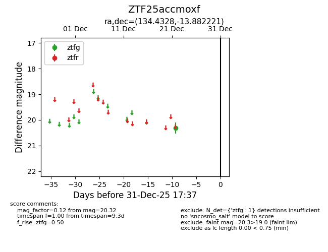
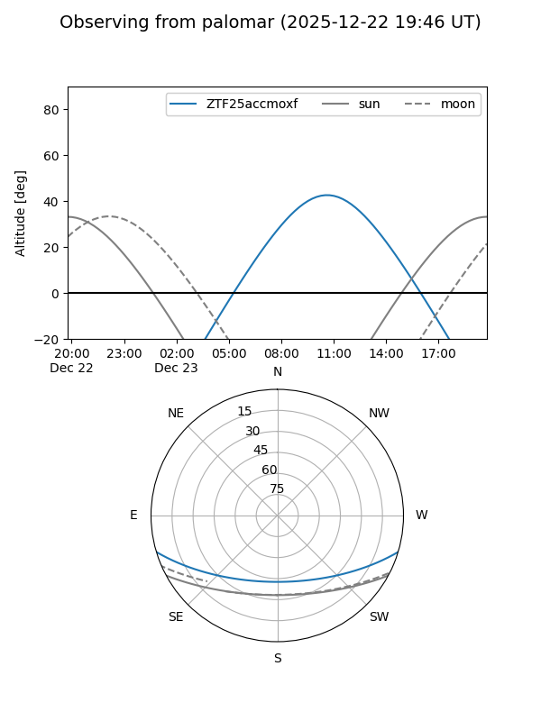

ZTF25accmoxf
Target ZTF25accmoxf at 2025-12-31 18:00
Aliases and brokers:
FINK: link
Lasair: link
ALeRCE: link
alt names
ZTF25accmoxf (ztf,fink_ztf)
Coordinates:
equatorial (ra, dec) = 134.4328,-13.88222
equatorial (HMS+DMS) = 08:57:43.88,-13:52:56.00
galactic (l, b) = (241.2302,+20.05822)
Flags:
Photometry:
last ztfg=20.32
1 ztfg detections
Lightcurve

Visibility


Additional plots